Releasenotes eBlinqx Hypotheekadvies – Juli 2024
Onderstaande updates hebben wij in de maand juli doorgevoerd:
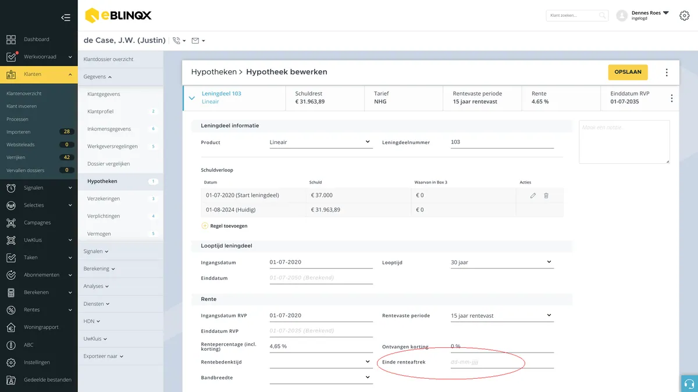
IT-20879: Einddatum renteaftrek leningdeel bestaande hypotheek wel of niet geinventariseerd
Einddatum renteafrek leningdeel wel geinventariseerd
Wanneer de adviseur, bij het inventariseren van de bestaande hypotheek in de database (Portefeuille Signalen) het veld 'Einde renteaftrek' heeft ingevuld en de einddatum van de renteaftrek ligt vóór de datum van vandaag, wordt in het HDN-aanvraagformulier, in het hoofdstuk 'Huidige woning & hypotheek', bij het onderdeel 'Huidig leningdeel' het veld 'Belast in box' automatisch ingevuld met 'Box 3'.
Wanneer de adviseur het veld 'Einde renteaftrek' heeft ingevuld en de einddatum van de renteaftrek ligt na de datum van vandaag, wordt in het HDN-aanvraagformulier, in het hoofdstuk 'Huidige woning & hypotheek', bij het onderdeel 'Huidig leningdeel' het veld 'Belast in box' automatisch ingevuld met 'Box 1'.
Einddatum renteafrek leningdeel niet ingevuld
Wanneer de adviseur, bij het inventariseren van de bestaande hypotheek in de database (Portefeuille Signalen) het veld 'Einde renteaftrek' niet heeft ingevuld, wordt gekeken naar het veld 'Einddatum looptijd leningdeel' of naar het veld 'Ingangsdatum looptijd leningdeel'. Bij de ingangsdatum van het leningdeel wordt vervolgens de looptijd van het leningdeel opgeteld.
Als de som van deze datum vóór vandaag ligt, wordt in het HDN-aanvraagformulier, in het hoofdstuk 'Huidige woning & hypotheek', bij het onderdeel 'Huidig leningdeel' het veld 'Belast in box' automatisch ingevuld met 'Box 3'.
Als de som van deze datum op of na vandaag ligt, wordt in het HDN-aanvraagformulier, in het hoofdstuk 'Huidige woning & hypotheek', bij het onderdeel 'Huidig leningdeel' het veld 'Belast in box' automatisch ingevuld met 'Box 1'.
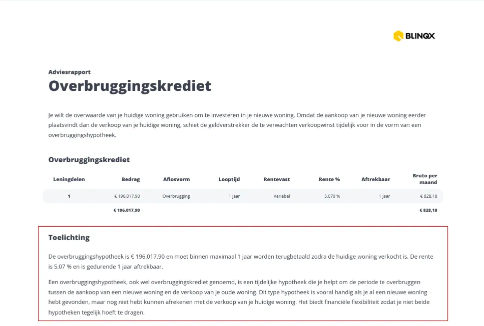
IT-20712: Adviesmotivering overbruggingshypotheek
De adviesmotivatie over de overbruggingshypotheek is nu verplaatst van de sectie 'Hypotheekconstructie' naar de sectie 'Overbruggingskrediet' zelf.
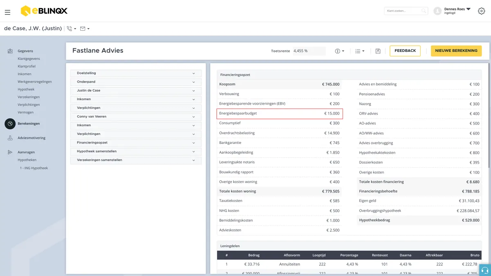
IT-20863: In Fastlane Oriëntatie en Fastlane Advies tonen wij het energiebespaarbudget nu ook in de financieringsopzet op het scherm.
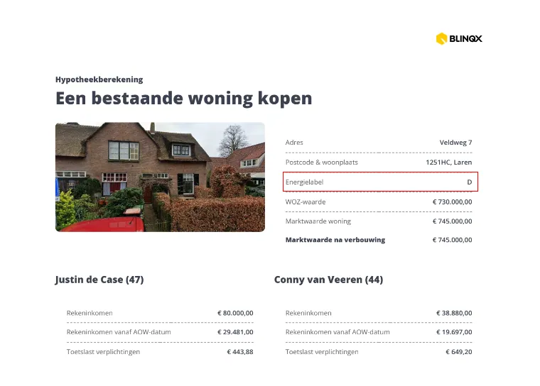
IT-20876: Energielabel
Het energielabel van de woning tonen wij nu ook in de Samenvatting
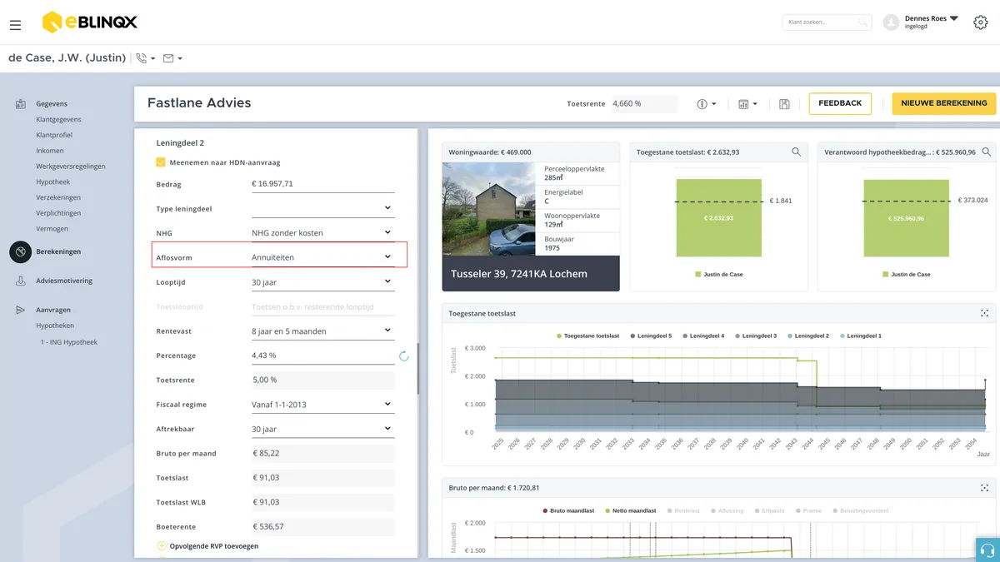
IT-20385: Ontslag uit hoofdelijke aansprakelijkheid
Bij de doelstelling 'Ontslag uit hoofdelijke aansprakelijkheid' splitst eBlinqx Hypotheekadvies de leningdelen automatisch op volgens de eigendomsverhouding van de woning en kiest hierbij automatisch voor de aflossingsvorm 'Annuiteiten'.
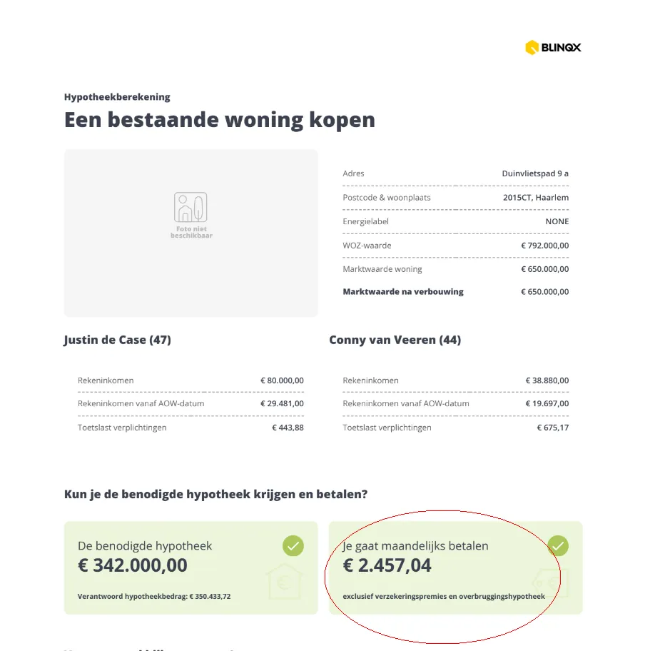
IT-20485: Bruto maandlast inclusief erfpachtcanon
In de Samenvatting laten we nu de bruto maandlasten zien, inclusief de eventuele maandelijkse erfpachtkosten.
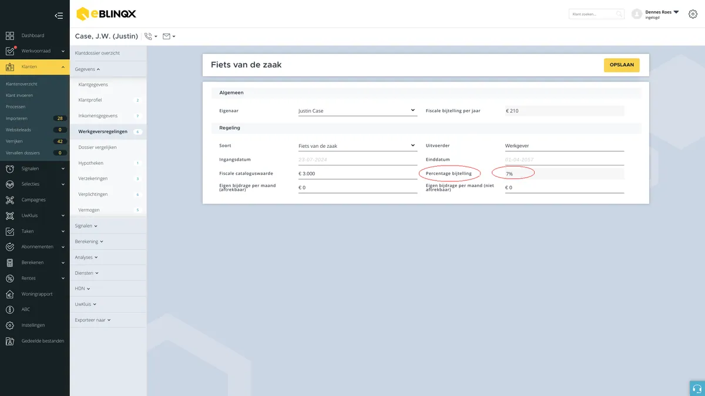
IT-16599: Fiets van de zaak
Bij de werkgeversregelingen hebben we de fiscale bijtelling voor de 'fiets van de zaak' standaard op 7% gezet.
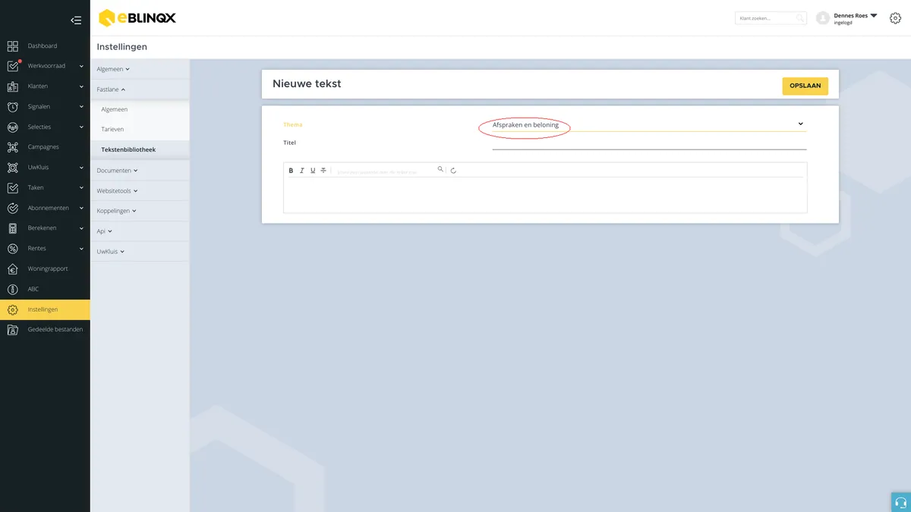
IT-20806: Afspraken en beloning
De typfout 'Afspaken en beloning' is nu gecorrigeerd naar 'Afspraken en beloning'.
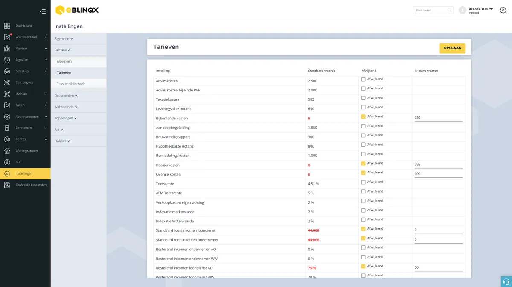
IT-20790: Alle eBlinqx Hypotheekadvies-instellingen op één plek
Alle regels en tarieven die je nodig hebt voor het geven van een goed advies zijn nu op één plek te vinden. Ga naar Instellingen -> eBlinqx Hypotheekadvies-menu -> Tarieven om zelf de standaardwaarden in te stellen die je wilt gebruiken. Deze waarden kun je later per klant aanpassen of overschrijven in hun specifieke berekening.
IT-20809: Validatieweergave in de tekstenbibliotheek
Bij het toevoegen van een nieuwe adviestekst aan de tekstenbibliotheek moet nu naast het Thema en de Titel ook de motivatietekst worden ingevuld. Als de motivatietekst ontbreekt, wordt het tekstvak rood omcirkeld en worden het Thema en de Titel niet opgeslagen.
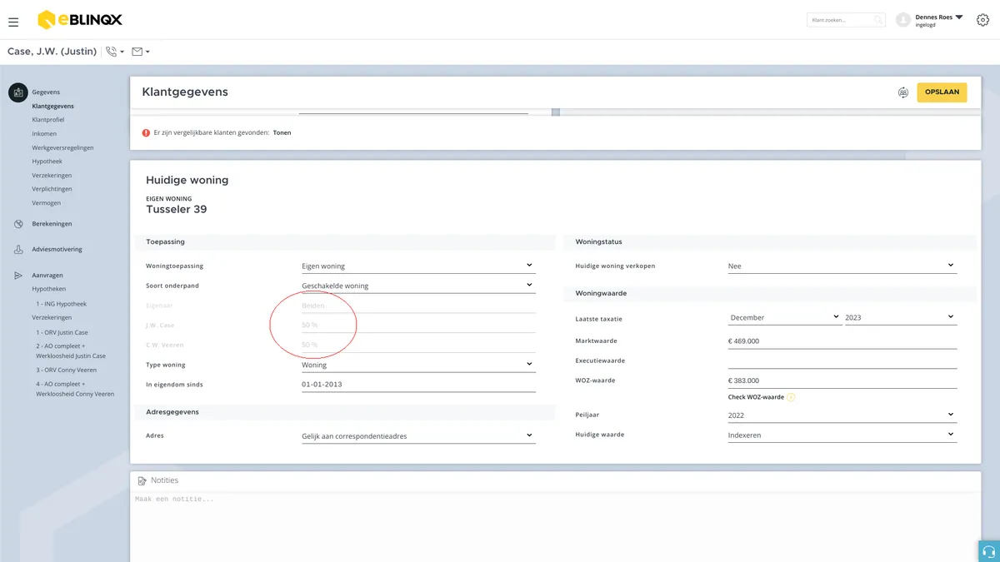
IT-20379: Burgerlijke staat en eigen woning bezit
Als blijkt dat de burgerlijke staat van de klanten gehuwd is in gemeenschap van goederen of een geregistreerd partnerschap in gemeenschap van goederen hebben, wordt bij de eigendom van de woning het veld ‘Eigenaar’ altijd automatisch ingevuld met ‘Beiden’. Het eigendomsdeel wordt daarbij altijd vastgesteld op 50%/50% en kan niet langer door de adviseur worden aangepast.
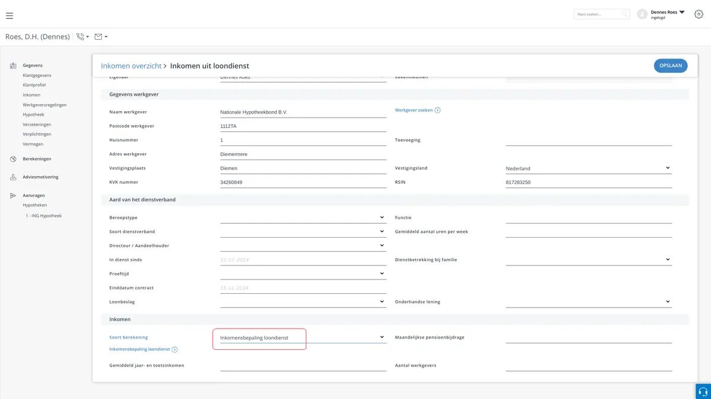
IT- 20303: Nieuwe link 'Inkomensbepaling loondienst'
De URL van de Inkomensbepaling Loondienst rekentool (IBLrekentool) is veranderd. Je berekent het toetsinkomen op basis van het UWV verzekeringsbericht voor klanten in loondienst op www.toetsinkomenberekenen.nl
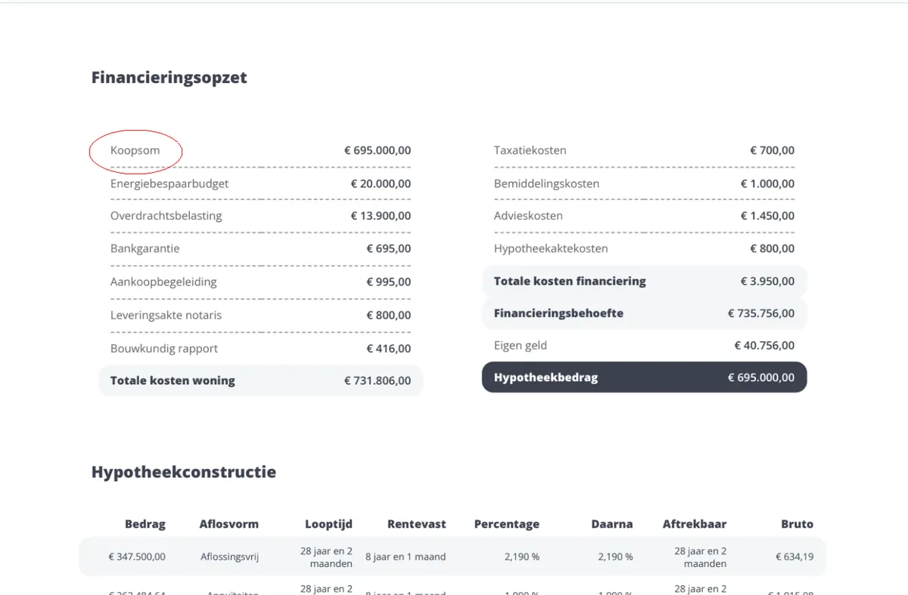
IT-20346: Financieringsopzet
In de download van de financieringsopzet was de rubriek 'Koopsom' vetgedrukt. Dit is nu aangepast, zodat alleen de totalen weer vetgedrukt zijn.
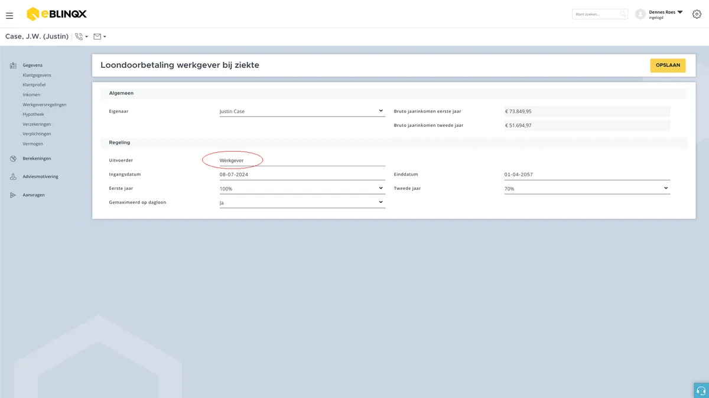
IT-20229: Loondoorbetaling werkgever bij ziekte
Bij de inventarisatie hebben wij bij het onderdeel WULBZ in de werkgeversregelingen, het veld 'Uitvoerder' geprefilled met 'Werkgever.
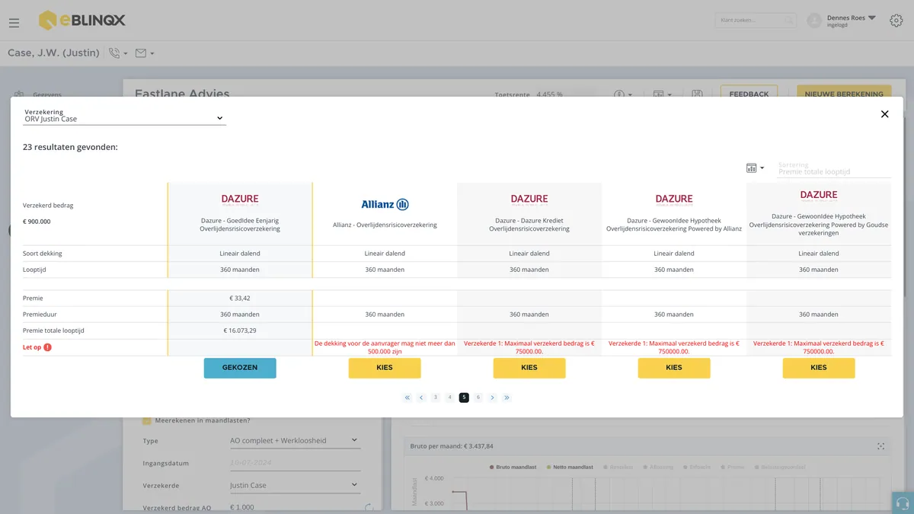
IT-15114: Validatieregels bij het vergelijken van overlijdensrisicoverzekeringen.
Als de premie van een overlijdensrisicoverzekering niet berekend kan worden, vermelden we de reden in het overzicht 'Vergelijk overlijdensrisicoverzekeringen'.
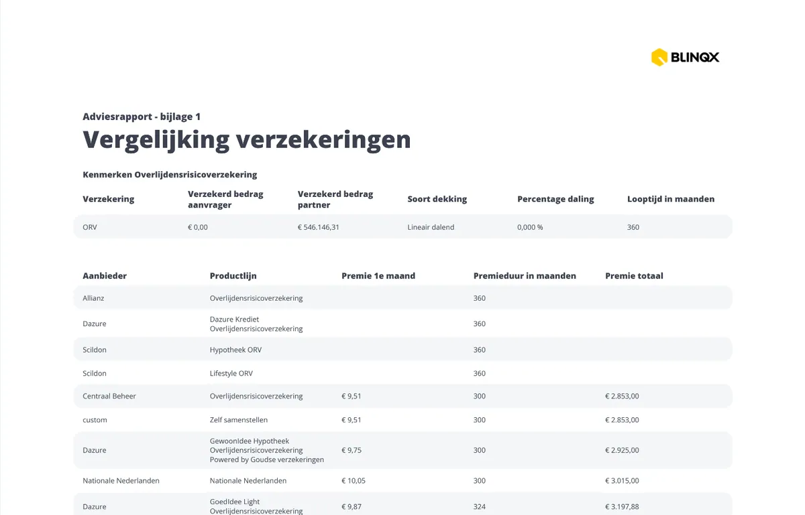
IT-20382: Vergelijking van de verzekeringen toegevoegd aan adviesrapport
We hebben een overzicht van de vergeleken overlijdensrisicoverzekeringen en woonlastenbeschermers toegevoegd als bijlage bij het adviesrapport. Dit overzicht kan zowel apart als onderdeel van het adviesrapport worden gedownload.
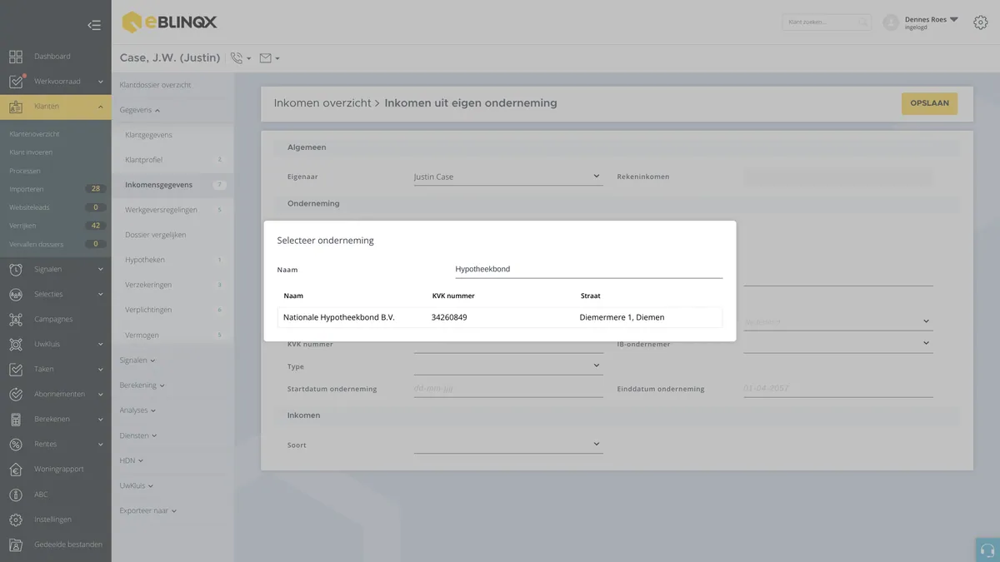
IT-20722: KVK-checker
We hebben de KVK-checker toegevoegd aan de inventarisatiemodule van eBlinqx Hypotheekadvies. Als de adviseur bij 'Inkomensgegevens' een nieuw inkomen uit loondienst of onderneming toevoegt, kan hij of zij de naam van de werkgever of het bedrijf van de klant invoeren. Door op 'Werkgever zoeken' of 'Onderneming zoeken' te klikken, worden de benodigde gegevens automatisch opgehaald bij de Kamer van Koophandel en ingevuld in de database. Deze gegevens kunnen vervolgens indien gewenst worden doorgestuurd naar het HDN-aanvraagformulier.
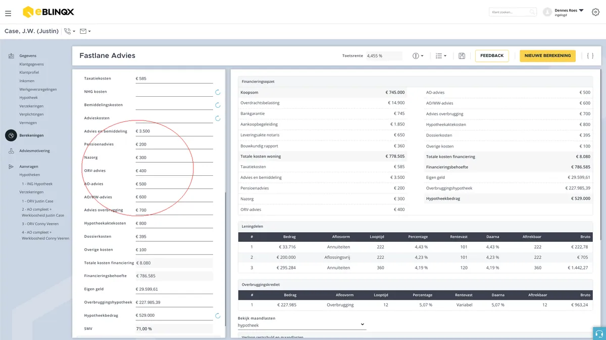
IT-18686: Uitbreiding van de financieringsopzet
We hebben het aantal opties binnen de financieringsopzet uitgebreid met de volgende velden: Advies en bemiddeling (in plaats van de losse posten), Pensioenadvies, Nazorg, ORV-advies, AO-advies, AO/WW-advies en Advies overbrugging. Hiermee kun je de extra uren voor eventuele deel- of aanvullende adviezen overzichtelijk aan je klant presenteren. Alleen de posten met een bedrag worden getoond in de applicatie en rapportages, zodat het overzichtelijk blijft voor de consument.
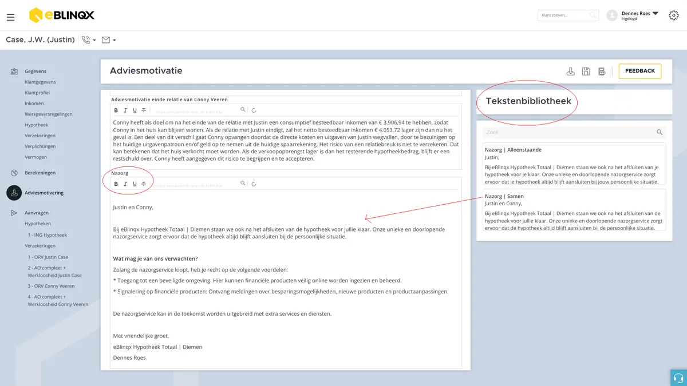
IT-20248: Nazorg toegevoegd aan het adviesrapport
We hebben het onderdeel 'Nazorg' toegevoegd aan de adviesmotivering en het adviesrapport. In de tekstenbibliotheek kun je je eigen tekst samenstellen en voorzien van dynamische velden, die je daarna met één druk op de knop aan het adviesrapport kunt toevoegen.
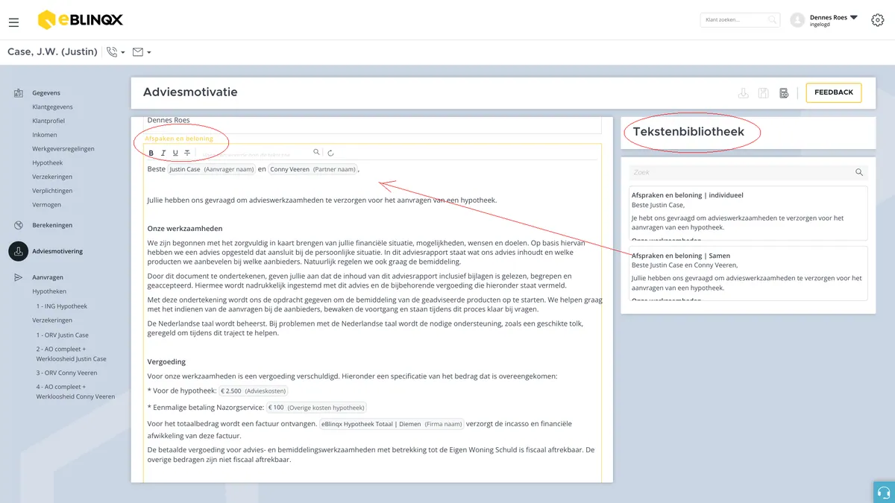
IT-20248: Afspraken en beloning toegevoegd aan het adviesrapport
We hebben het onderdeel 'Afspraken en beloning' toegevoegd aan de adviesmotivering en het adviesrapport. In de tekstenbibliotheek kun je je eigen tekst samenstellen en voorzien van dynamische velden, die je daarna met één druk op de knop aan het adviesrapport kunt toevoegen.
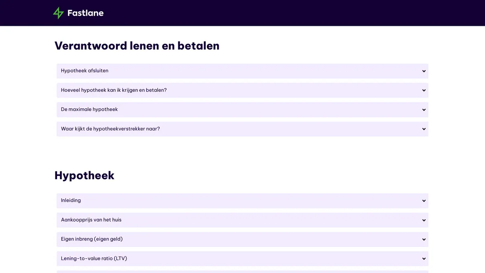
IT-20758: Voorbeeldteksten
We hebben meer dan 300 voorbeeldteksten online gezet voor adviseurs die met Fastlane Advies werken. Deze teksten kun je kopiëren naar je eigen tekstenbibliotheek en aanpassen met dynamische velden als dat nodig is. Met één druk op de knop kun je deze teksten vervolgens toevoegen aan het adviesrapport.
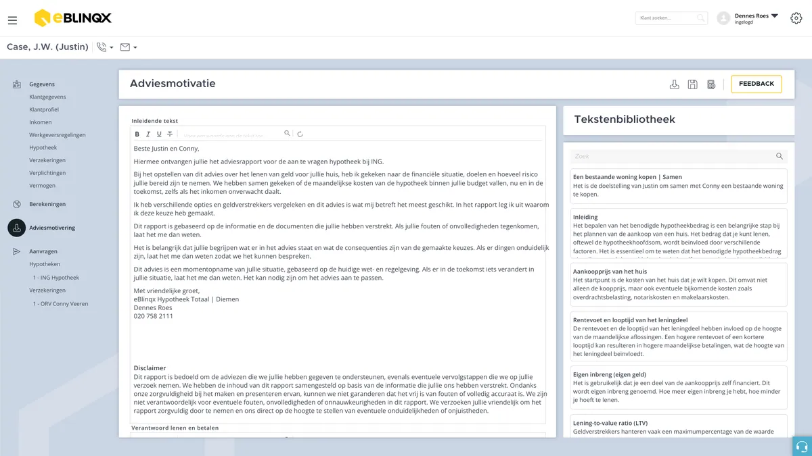
IT-18374: Ontdek de Nieuwste Feature van eBlinqx Hypotheekadvies Hypotheekadvies: De Tekstenbibliotheek
Bij Blinqx Verzekering & Hypotheek streven we er voortdurend naar om jouw werk als hypotheekadviseur efficiënter en klantgerichter te maken. Met trots introduceren we onze nieuwste innovatie: de Fastlane Advies Tekstenbibliotheek.
Wat is de Tekstenbibliotheek?
De Tekstenbibliotheek is een krachtige tool die jou als hypotheekadviseur de mogelijkheid biedt om eigen teksten toe te voegen en deze te voorzien van dynamische velden. Hierdoor kun je gemakkelijk klantspecifieke tekstblokken integreren in je adviesrapporten. Dit betekent dat je niet langer standaard teksten hoeft te gebruiken, maar dat je je adviezen volledig kunt afstemmen op de individuele behoeften en omstandigheden van je cliënten.
Hoe werkt het?
Eigen Teksten Toevoegen: Voeg eenvoudig je eigen teksten toe aan de bibliotheek. Deze teksten kunnen variëren van standaardverklaringen tot gedetailleerde adviezen.
Dynamische Velden: Gebruik dynamische velden om ervoor te zorgen dat elke tekst automatisch wordt aangepast aan de specifieke klantgegevens. Dit bespaart tijd en verhoogt de nauwkeurigheid.
Gerubriceerde Teksten: De teksten worden automatisch gerubriceerd, zodat je alleen relevante klantspecifieke teksten ziet voor het hoofdstuk waar je op dat moment mee bezig bent. Dit maakt het proces niet alleen sneller maar ook overzichtelijker.
Voordelen voor Jou:
Efficiëntie: Bespaar tijd door snel en gemakkelijk klantspecifieke teksten te selecteren en toe te voegen aan je adviesrapporten.
Nauwkeurigheid: Verklein de kans op fouten door gebruik te maken van dynamische velden die automatisch de juiste klantgegevens invullen.
Relevantie: Krijg alleen de teksten te zien die relevant zijn voor het huidige hoofdstuk, wat zorgt voor een gestroomlijnd en overzichtelijk proces.
Personalisatie: Verhoog de klanttevredenheid door adviezen te bieden die volledig zijn afgestemd op de persoonlijke situatie van je cliënten.
Conclusie: Met de introductie van de Tekstenbibliotheek tilt Fastlane Advies jouw adviespraktijk naar een hoger niveau. Deze nieuwe feature maakt het mogelijk om snel, nauwkeurig en klantgericht te werken, waardoor je meer tijd overhoudt voor wat echt belangrijk is: het bieden van topkwaliteit advies aan je cliënten. Ontdek vandaag nog de voordelen van de Tekstenbibliotheek en ervaar zelf hoe deze innovatie jouw werkwijze kan transformeren.